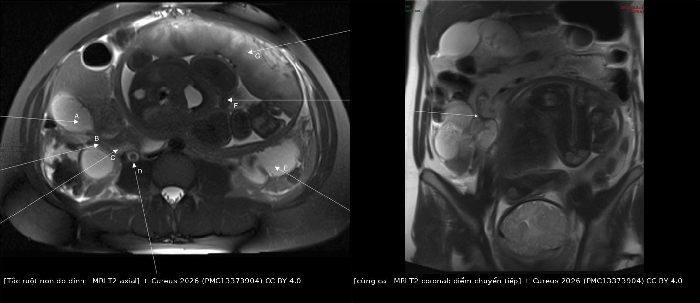
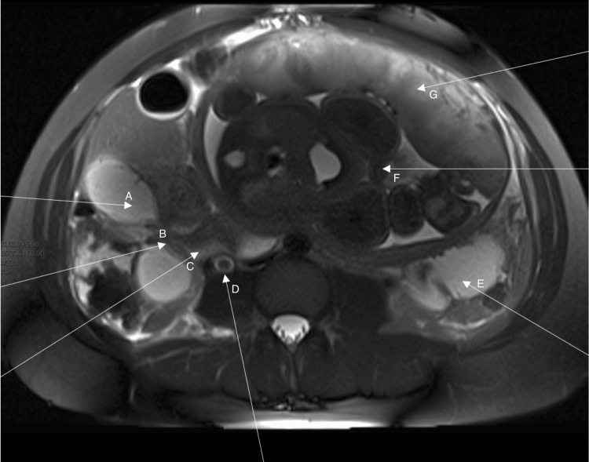

1667 — Tắc ruột non do dính sau mổ ở thai phụ / Adhesive small bowel obstruction in pregnancy
Tags: pattern:tac-ruot-non pattern:dinh-phuc-mac pattern:diem-chuyen-tiep pattern:xoan-ruot pattern:thoat-vi-noi vung:ruot-non vung:o-bung protocol:MRI-thai protocol:CT-lieu-thap protocol:X-quang-bung protocol:sieu-am-bung protocol:gastrografin incidentaloma:u-nuoc-thai-ky
Mức chắc chắn (certainty): tổng hợp y văn (literature synthesis) — ghép 1 tổng quan hệ thống 216 thai phụ tắc ruột non (World J Emerg Surg 2024, PMC11007914, CC BY 4.0), 1 đoàn hệ hồi cứu 43 ca dùng gastrografin (Sci Rep 2025, PMC12297560, CC BY-NC-ND 4.0), 1 tổng quan phẫu thuật cấp cứu ở thai phụ (Can J Surg 2025, PMC12133296, CC BY-NC-ND 4.0), 1 tổng quan hình ảnh bụng cấp thai kỳ (Diagnostics 2023, PMC10528125, CC BY 4.0) và 1 ca tắc ruột non ở thai 38 tuần (Cureus 2026, PMC13373904, CC BY 4.0). Không có thử nghiệm ngẫu nhiên nào về ngưỡng mổ ở thai phụ.
Câu chốt: tắc ruột non ở thai phụ không hiếm đến mức bỏ qua, nhưng cũng không điển hình: 52,1% xảy ra ở 3 tháng cuối, ~2/3 do dính sau mổ cũ (kể cả mổ lấy thai trước đó), và chẩn đoán muộn giết thai nhiều hơn giết mẹ — tử vong thai 15,9% so với mẹ 3,7%. Hai điều làm thay đổi kết cục: (1) dùng MRI không cản từ (SSFSE/HASTE) thay vì sợ tia xạ — chỉ 14,3% ca trong y văn được chẩn đoán bằng MRI; (2) gastrografin đường mũi–dạ dày vừa chẩn đoán vừa điều trị — thành công bảo tồn 90,5% vs 59,1%, phải mổ 9,5% vs 40,9%, và biết kết quả sau 29 giờ thay vì 75 giờ.
1. Tổng quan bệnh học – cơ chế hình ảnh
1.1 Vì sao thai kỳ làm dính thành tắc
- Cơ chế "dây căng": sau mổ bụng/mổ lấy thai, các quai ruột dính vào một dải xơ cố định (dây dính). Khi tử cung lớn dần, nó đẩy quai ruột lên trên và sang bên, làm dây dính căng như dây cung và xoay quai ruột quanh điểm cố định → hẹp lòng tại một điểm chuyển tiếp (transition point). Vì vậy tắc thường xuất hiện khi tử cung to nhất (3 tháng cuối, 52,1%), không phải lúc mới mổ.
- Vì sao ứ dịch: ruột trên điểm tắc ứ dịch và hơi (dịch tiết + khí nuốt vào) → giãn; ruột dưới xẹp. Trên T2/SSFSE, dịch ứ tăng tín hiệu rất mạnh (nước tự do), nên chỉ cần T2 không cản từ là thấy rõ ranh giới giãn–xẹp — đây là lý do MRI là modality đầu tay, không cần thuốc.
- Vì sao nguy hiểm hơn người không mang thai: tử cung to che chắn thăm khám, bạch cầu và CRP tăng sinh lý, ít dấu hiệu phúc mạc vì thành bụng bị căng; đồng thời tử cung to làm tăng áp lực ổ bụng nên quai ruột dễ bị xoắn và thiếu máu hơn.
- Ngưỡng định lượng nằm lòng (xem bảng 1.2): tần suất 1/1.500 – 1/66.431 ca sinh (có nguồn ghi 1/17.000), 60–70% do dính, 82,5% phải mổ, trong đó 61,7% mổ trong 24 giờ.
- TẠI SAO hình ảnh quyết định: không có xét nghiệm máu nào phân biệt tắc cơ học với liệt ruột sinh lý; chỉ có điểm chuyển tiếp trên hình ảnh mới chứng minh tắc cơ học, và dấu hiệu thiếu máu ruột mới buộc mổ ngay.
1.2 Ngưỡng định lượng nằm lòng
| Đại lượng | Số liệu | Nguồn |
|---|---|---|
| Tần suất tắc ruột non trong thai kỳ | 1/1.500 – 1/66.431 ca sinh; một tổng quan khác ghi 1/17.000 | PMC11007914; PMC12133296 |
| Vị trí hàng bệnh cảnh | nguyên nhân bụng cấp phổ biến thứ 3 ở thai phụ (sau viêm ruột thừa, bệnh đường mật) | PMC11007914 |
| Nguyên nhân | dính 60–70%; thoát vị nội 29,0%; xoắn ruột non 13,8%; lồng ruột 12,0% | PMC11007914; PMC12133296 |
| Phân bố theo 3 tháng | 5,9% / 42,0% / 52,1% | PMC11007914 |
| Tỉ lệ phải mổ | 82,5%; 61,7% mổ trong 24 giờ | PMC11007914 |
| Đường mổ | mở 75,6%, nội soi 15,9%, chuyển mở 8,5% | PMC11007914 |
| Thủ thuật | gỡ dính 20,3%; cắt ruột 34,4%; mổ lấy thai cùng lúc 23,2% | PMC11007914 |
| Tử vong mẹ / thai | 3,7% / 15,9–16,0% | PMC11007914 |
| Nguy cơ thai khi tắc ruột | mất thai 17%, sinh non 45%, tử vong mẹ 2% | PMC12133296 |
| Chẩn đoán bằng hình ảnh | X-quang 19,8%, siêu âm 11,1%, CT 22,6%, MRI 14,3%, khám/mổ 30,9% | PMC11007914 |
| Liều xạ thai nhi | X-quang bụng 0,1–3,0 mGy; CT bụng 1,3–35 mGy; CT tiểu khung 10–50 mGy; < 50 mGy chưa ghi nhận nguy cơ | PMC12133296 |
| Gastrografin: thành công bảo tồn | 90,48% (19/21) vs 59,09% (13/22), p = 0,045 | PMC12297560 |
| Gastrografin: phải mổ | 9,52% (2/21) vs 40,91% (9/22) | PMC12297560 |
| Gastrografin: thời gian đánh giá đáp ứng | 29,29 ± 0,40 giờ vs 75,23 ± 8,47 giờ, p < 0,001 | PMC12297560 |
| Gastrografin: nằm viện | trung vị 6 ngày (6–7) vs 9 ngày (7–14,25), p = 0,001 | PMC12297560 |
| Biến cố thai nhi do gastrografin | 0 dị tật, 0 sảy thai, không khác sinh non (9,52% vs 18,18%, p = 0,664) | PMC12297560 |
2. Mẫu hình + chẩn đoán phân biệt theo vị trí (gamut)
- Mẫu hình chốt (5 dấu hiệu, đọc theo thứ tự):
- Quai ruột non giãn > 3 cm, chứa dịch–hơi (mức dịch ngang trên X-quang đứng, tăng tín hiệu T2 trên MRI).
- Điểm chuyển tiếp (transition point): nơi quai giãn đột ngột chuyển sang quai xẹp — dấu hiệu duy nhất chứng minh tắc cơ học.
- Ruột dưới điểm tắc xẹp hoàn toàn, ít hơi.
- Dấu hiệu "phân ruột non" (small bowel feces sign) ở quai trên điểm tắc — gợi ý tắc bán cấp, không đặc hiệu nguyên nhân.
- Dấu hiệu nguy hiểm (strangulation): quai hình chữ U/C đóng kín (closed loop), xoắn mạc treo (whirl sign), thành ruột không ngấm thuốc, khí trong thành ruột (pneumatosis), khí trong tĩnh mạch cửa, dịch ổ bụng nhiều.
- Gamut theo nguyên nhân (thay đổi theo lịch sử mổ):
- Chưa từng mổ bụng: nghĩ thoát vị bẹn/đùi/ventral bị nghẹt, xoắn ruột non, lồng ruột, u/lymphoma, bệnh Crohn hẹp, dính bẩm sinh (11% dính không do mổ).
- Đã mổ lấy thai / mổ phụ khoa: dính là hàng đầu; khối dính vào thành bụng sẹo mổ; thoát vị ở vết mổ.
- Đã mổ nối ruột non theo Roux-en-Y (giảm béo): thoát vị nội ở Petersen, lỗ mạc treo ngang, lỗ hỗng–hỗng — chiếm 29,0% ca trong tổng quan và thường không có dấu hiệu tắc điển hình vì quai ruột xoay quanh mạc treo chứ không dính vào thành.
- Có bệnh nền: lồng ruột (12,0%), xoắn (13,8%), thoát vị nội (29,0%).
- Ba câu hỏi trước khi kết luận: (1) có điểm chuyển tiếp thật không? (2) có dấu hiệu thiếu máu/closed loop không? (3) thai đang ở tuần bao nhiêu (quyết định mổ nội soi hay mổ mở, có cần mổ lấy thai cùng lúc)?
3. Bảng so sánh phân biệt (ma trận đối chiếu)
| Thực thể (entity) | Hình ảnh điển hình | Chốt vào (rule-in) | Chốt loại (rule-out) | Gợi ý xác nhận |
|---|---|---|---|---|
| Tắc do dính | Một điểm chuyển tiếp đơn độc, quai trên giãn, dính vào sẹo mổ, không có túi thoát vị | Tiền sử mổ bụng + 1 điểm chuyển tiếp + không khối | Nhiều mức tắc, không điểm chuyển tiếp → nghĩ liệt ruột | MRI SSFSE coronal/axial; mổ gỡ dính nếu không đáp ứng |
| Thoát vị nội sau RYGB | Whirl sign (mạc treo xoắn), SMV beaking, mạc treo sung huyết/phù, quai ruột tụ lại một vùng | Mổ RYGB trước đó + whirl/SMV beaking | Không có mạc treo xoắn, không tiền sử mổ → nghĩ dính | MRI/CT; dấu hiệu có đồng thuận liên đọc tốt nhất: whirl, SMV beaking, sung huyết mạc treo |
| Xoắn ruột non | Quai giãn hình chữ U, whirl sign, mạch treo xoắn, thiếu máu thành ruột | Whirl + quai đóng kín + dịch ổ bụng | Quai giãn rải rác, không xoắn → nghĩ dính/tắc bán cấp | CTA/MRI; mổ ngay khi có dấu hiệu thiếu máu |
| Lồng ruột | Dấu bia (target) / dấu bánh mì kẹp, lưỡi liềm mạc treo, đầu lồng hình đạn | Target sign + quai lồng vào nhau | Không thấy đầu lồng → loại trừ | Siêu âm là đầu tay; MRI xác nhận, không dùng thuốc thụt ở thai phụ |
| Tắc do u/IBD hẹp | Khối/thành ruột dày tại điểm tắc, hạch, không dính sẹo mổ | Thành dày > 3 mm + khối + hạch | Thành mỏng, chỉ dính → nghĩ dính | MRI bụng có/không cản từ; nội soi sau sinh |
| Chèn ép tử cung (bẫy sinh lý) | Quai ruột bị đẩy lệch, không có điểm chuyển tiếp, hết khi đổi tư thế | Không điểm hẹp + quai vẫn có nhu động + thai to | Có điểm chuyển tiếp cố định → tắc thật | MRI lặp sau 2–4 giờ; theo dõi lâm sàng |
- Ảnh ghép đối chiếu (cùng một ca, hai bình diện): trục (a) cho thấy quai giãn–điểm chuyển tiếp–quai xẹp; coronal (b) xác định điểm chuyển tiếp đơn độc ở hồi tràng cuối, cạnh tử cung to.

Trái: axial — quai giãn (A, B, C, E, F, G), túi mật (A), điểm chuyển tiếp (B), quai xẹp (C), ứ nước phải (D), tử cung/thai (F). Phải: coronal — mũi tên chỉ điểm chuyển tiếp đơn độc. Nguồn: Cureus 2026 (PMC13373904), CC BY 4.0, ảnh ghép letterbox.4. Protocol chụp + hệ phân độ/điểm chuẩn hóa
4.1 Trình tự hình ảnh (theo bậc, không nhảy bậc)
- Siêu âm bụng — đầu tay: quai ruột ứ dịch, mất nhu động, có/không có dịch ổ bụng; nhưng không xác định được điểm chuyển tiếp trong phần lớn ca (chỉ 11,1% ca trong y văn được chẩn đoán bằng siêu âm).
- MRI bụng không cản từ — chuẩn khi siêu âm không kết luận: chuỗi T2 SSFSE/HASTE (nhanh, ít nhiễu do thai máy), coronal + axial, thêm T1/T2 fat-sat khi nghi máu/viêm; DWI hữu ích cho ổ áp-xe nhưng không bắt buộc. Truy quai ruột từ trên xuống tới điểm chuyển tiếp, đo đường kính quai giãn và bề dày thành.
- CT bụng–tiểu khung liều thấp — khi MRI không có/không kịp, khi bệnh nhân không ổn định, hoặc nghi thiếu máu ruột cấp. Không từ chối CT chỉ vì đang mang thai: liều thai nhi 1,3–35 mGy (bụng) và 10–50 mGy (tiểu khung), đều dưới ngưỡng 50 mGy chưa ghi nhận nguy cơ; dùng protocol liều thấp và hội chẩn bác sĩ CĐHA.
- X-quang bụng đứng — chỉ để theo dõi gastrografin hoặc khi không có MRI/CT; liều thai nhi 0,1–3,0 mGy.
- Không dùng gadolinium thường quy (qua nhau thai, chưa đủ dữ liệu an toàn); không dùng thuốc thụt baryte khi nghi tắc/thủng.
4.2 Gastrografin: vừa chẩn đoán, vừa điều trị
- Cơ chế: dung dịch 1900 mOsm/L (~6 lần dịch ngoại bào) → hút dịch vào lòng ruột, giảm phù thành ruột, kích thích nhu động, tăng chênh áp qua chỗ tắc, bôi trơn; đồng thời cản quang cho phép theo dõi thuốc tới đại tràng trong 24 giờ = tắc giải quyết được bằng bảo tồn.
- Phác đồ đã báo cáo (43 thai phụ): 100 mL gastrografin 75% qua sonde mũi–dạ dày sau ≥ 2 giờ hút dịch hiệu quả; kẹp sonde 2 giờ rồi hút lại; X-quang bụng ở 24 giờ: thấy thuốc ở đại tràng → tiếp tục bảo tồn, không thấy → mổ.
- Ngưỡng thành công: bảo tồn 90,48% vs 59,09% (p = 0,045); mổ 9,52% vs 40,91%; nằm viện 6 vs 9 ngày; không có biến cố mẹ/thai trong loạt nhỏ này — nhưng đây là nghiên cứu hồi cứu, tự chọn nhóm, nên chỉ dùng khi không có dấu hiệu thiếu máu/closed loop.
4.3 Sơ đồ quyết định
flowchart TD
A[Thai phụ đau bụng + nôn + bí trung đại tiện] --> B[Siêu âm bụng]
B --> C{Siêu âm kết luận?}
C -->|Không| D[MRI T2 SSFSE/HASTE không cản từ]
C -->|Có hoặc không có MRI| E[CT liều thấp: 1,3–35 mGy]
D --> F{Có điểm chuyển tiếp?}
E --> F
F -->|Không| G[Theo dõi: có thể chèn ép tử cung sinh lý]
F -->|Có| H{Có dấu hiệu thiếu máu/closed loop/phúc mạc?}
H -->|Có| I[Mổ ngay: mổ mở hoặc nội soi theo tuổi thai]
H -->|Không| J[Bảo tồn: nhịn ăn, sonde, dịch, giảm co, theo dõi thai]
J --> K[Gastrografin 100 mL 75% sau ≥ 2 giờ hút dịch]
K --> L[X-quang 24 giờ: thuốc tới đại tràng?]
L -->|Có| M[Tiếp tục bảo tồn, cho ăn lại]
L -->|Không| N[Mổ]
4.4 Nguyên tắc mổ theo tuổi thai
- 3 tháng đầu và 3 tháng giữa: nội soi được ưu tiên nếu khả thi (vết mổ nhỏ, ít đau, ra viện sớm); vào trocar kiểu mở (Hasson) ở điểm cách tử cung, giảm áp CO₂ (12 mmHg), nghiêng trái 15–30° để tử cung không chèn tĩnh mạch chủ.
- 3 tháng cuối: tử cung to che phủ — mổ mở là lựa chọn thực tế; nếu đã đủ tháng hoặc có chỉ định sản khoa, có thể mổ lấy thai trước rồi xử lý tắc ruột qua cùng đường rạch (ca 38 tuần: gỡ dây dính qua vết mổ lấy thai, mẹ và con hồi phục tốt — PMC13373904).
- Không hoãn mổ vì sợ tia xạ: chậm trễ làm tăng mất thai, sinh non; nguy cơ thiếu máu ruột/cắt ruột tăng theo giờ.
5. Biến thể bình thường và cạm bẫy
- Giãn ruột sinh lý thai kỳ: progesterone giảm nhu động, ruột giãn nhẹ và chậm; nhưng không có điểm chuyển tiếp và không có mức dịch–hơi rõ. Đừng gọi "tắc" khi chỉ giãn nhẹ.
- Chèn ép tử cung: quai ruột bị đẩy lệch, hết khi nằm nghiêng trái hoặc lặp hình sau vài giờ; thiếu điểm chuyển tiếp cố định là chốt loại.
- Ứ nước – ứ niệu quản sinh lý thai kỳ (phải > trái) hay đi kèm và dễ bị đọc nhầm là nguyên nhân đau bụng; đây là phát hiện kèm, không phải nguyên nhân tắc ruột.
- Tử cung chèn ép tĩnh mạch chủ khi nằm ngửa gây tụt huyết áp, thai máy giảm — đừng nhầm với sốc do thiếu máu ruột; đổi tư thế nghiêng trái là nghiệm pháp.
- Bạch cầu/CRP tăng sinh lý, không có dấu hiệu phúc mạc rõ vì thành bụng căng → đừng chờ đủ tiêu chuẩn "bụng ngoại khoa" mới mổ; theo dõi nhịp tim thai và toan chuyển hóa.
- MRI: bẫy chuyển động và dịch ối — dịch ối rất sáng T2 có thể che quai ruột; dùng chuỗi HASTE/SSFSE và đọc đa bình diện, đừng đo điểm tắc chỉ trên một lát.
- Đừng dùng gastrografin khi nghi thủng/thiếu máu/closed loop — trong loạt trên, 7 ca bị loại trước vì viêm phúc mạc, lồng ruột, xoắn, thoát vị nghẹt, u.
- Cạm bẫy "đã mổ lấy thai nên chỉ nghĩ dính": ở người đã mổ RYGB, thoát vị nội có thể không có dấu hiệu tắc trên X-quang nhưng đã có quai chết; MRI/CT là bắt buộc, không dựa vào X-quang.
6. Tự lượng giá — Blind Quiz
Ca 1 — Thai 38 tuần, đau bụng thượng vị, nôn, thai máy giảm; bụng mềm, không phản ứng; xét nghiệm bình thường.

- Câu hỏi: (1) Mô tả 3 dấu hiệu chính trên ảnh. (2) Điểm chuyển tiếp nằm ở đâu và do đâu? (3) Có chỉ định mổ ngay không?
Bấm để hiện đáp án (findings + chẩn đoán)
- Findings: nhiều quai ruột non giãn chứa dịch (A, B, C, E, F, G), quai xẹp ở hồi tràng cuối (C), điểm chuyển tiếp (B); ứ nước phải (D) — sinh lý thai kỳ; tử cung/thai chiếm phần lớn ổ bụng (F). Không có khí trong thành ruột, không có closed loop.
- Chẩn đoán: tắc ruột non do dính — mổ lấy thai 38 tuần, gỡ dây dính xơ ngang hồi tràng cuối qua cùng vết mổ; mẹ và con hồi phục không biến chứng.
- Vì sao mổ ngay dù xét nghiệm bình thường: đủ tháng + triệu chứng tiến triển + thai máy giảm là chỉ định sản khoa; đồng thời điểm chuyển tiếp đơn độc xác nhận tắc cơ học. Không chờ "xét nghiệm xấu".
- Bài học: ở 3 tháng cuối, mổ lấy thai + gỡ dính cùng một đường rạch giảm một lần mổ và giảm biến chứng.
- Nguồn ảnh: Cureus 2026, PMC13373904, CC BY 4.0 — nguyên bản.
Ca 2 — Thai 21 tuần, bệnh Crohn đã mổ, có ileostomy; đau bụng tăng dần 2 ngày, nôn ra dịch xanh.

- Câu hỏi: (1) Vì sao chọn MRI thay vì CT ở ca này? (2) Dấu hiệu nào chứng minh tắc? (3) Nếu siêu âm thấy quai giãn nhưng không tìm được điểm tắc thì làm gì?
Bấm để hiện đáp án
- Findings: coronal (a) và axial HASTE (b): nhiều quai ruột giãn chứa dịch ở phía trên ileostomy, đoạn dưới xẹp; không có khối, không có dấu hiệu thiếu máu. Mổ nội soi xác nhận dính.
- Vì sao MRI: không tia xạ, dịch ứ sáng T2 cho tương phản rất tốt, HASTE/SSFSE nhanh và ít nhiễu thai máy; thai 21 tuần nên tránh CT nếu MRI trả lời được.
- Dấu hiệu chứng minh tắc: điểm chuyển tiếp giữa quai giãn và quai xẹp — không phải "quai giãn" đơn thuần.
- Nếu siêu âm không tìm được điểm tắc: MRI coronal + axial là bước tiếp theo (không phải X-quang); nếu MRI không có → CT liều thấp, và không trì hoãn khi có dấu hiệu thiếu máu.
- Nguồn ảnh: Diagnostics 2023, PMC10528125, CC BY 4.0 — nguyên bản (2 panel a–b).
Ca 3 — Thai 28 tuần, mổ lấy thai 3 năm trước, tắc ruột non trên MRI, không có dấu hiệu thiếu máu. Chọn bảo tồn hay mổ?
Bấm để hiện đáp án
- Chọn bảo tồn có kiểm soát (nhịn ăn, sonde mũi–dạ dày, dịch tinh thể, giảm co tử cung, theo dõi thai) + gastrografin 100 mL 75% sau ≥ 2 giờ hút dịch, X-quang ở 24 giờ.
- Con số để tư vấn: bảo tồn thành công 90,5% vs 59,1%; phải mổ 9,5% vs 40,9%; biết kết quả sau ~29 giờ thay vì ~75 giờ; nằm viện 6 vs 9 ngày. Loạt nhỏ, hồi cứu — nhưng không có biến cố thai trong nhóm dùng gastrografin.
- Chuyển mổ ngay nếu: đau tăng không giảm, sốt/nhịp nhanh, phản ứng phúc mạc, toan chuyển hóa, thuốc không tới đại tràng sau 24 giờ, hoặc thai máy giảm.
- Bẫy: đừng chờ "đủ 48–72 giờ" ở thai phụ — 82,5% ca trong y văn phải mổ và 61,7% mổ trong 24 giờ; chậm trễ làm tăng cắt ruột và mất thai.
Bài liên quan chéo
- 109 – Áp-xe ruột thừa ở thai phụ
- 145 – Viêm ruột thừa trong thai kỳ
- 160 – Bụng cấp GI
- 162 – Tắc ruột
- 1666 – Hẹp niệu quản sau vá rò và sau xạ trị
Không dùng để chẩn đoán độc lập khi chưa có người hướng dẫn.